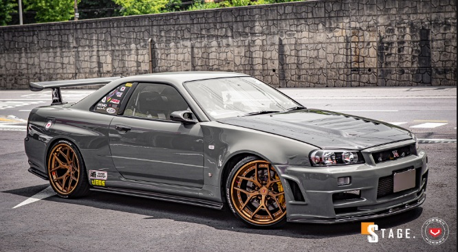
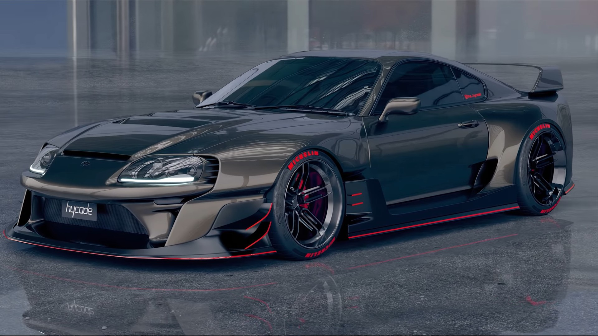
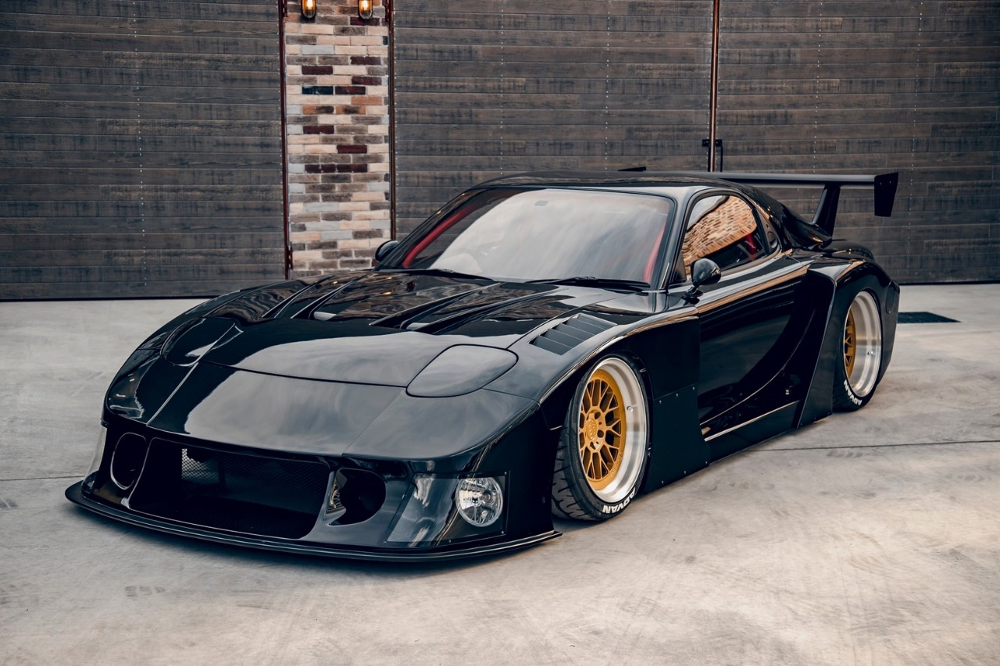
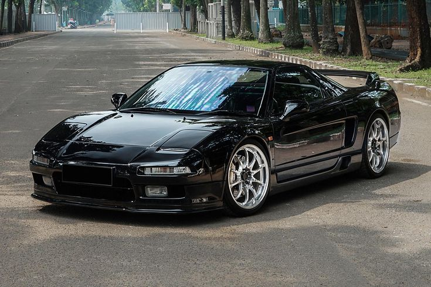
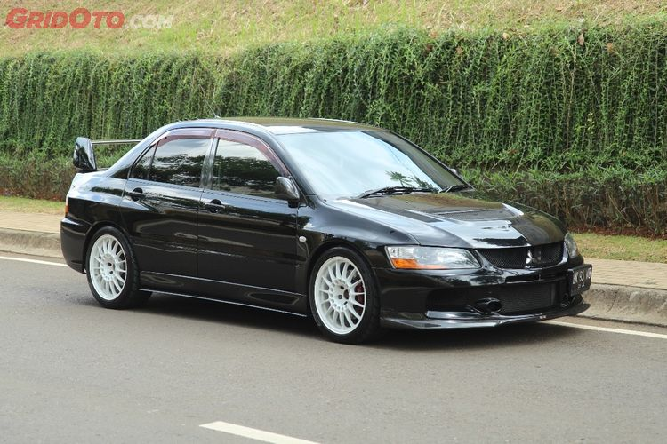
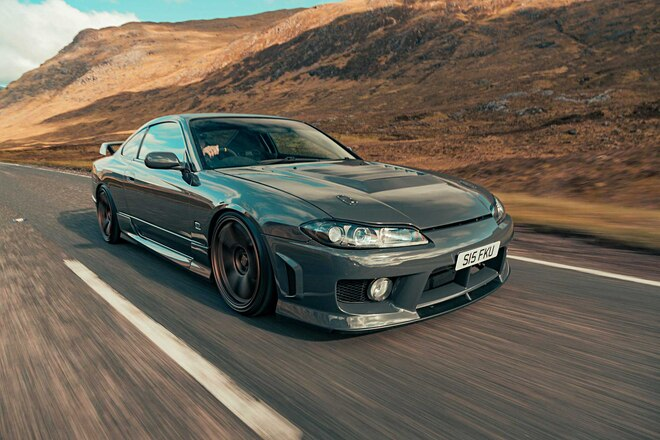
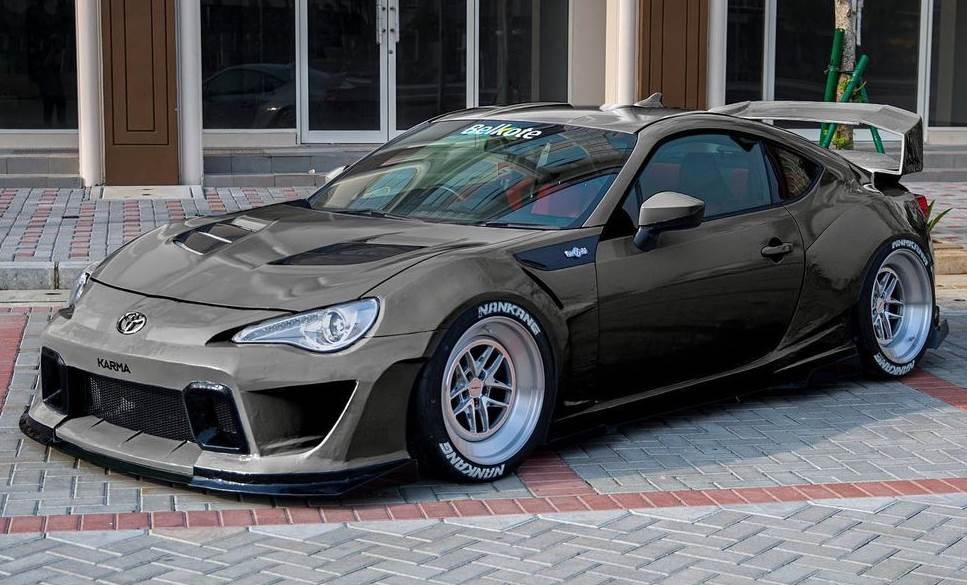

Nissan Skyline GT-R R34 merupakan salah satu mobil ganas milik Nissan yang dijuluki dengan nama “Godzilla”. Mobil ini memiliki tampilan yang ikonik dengan model “coupe”-nya. Sayangnya Nissan memberhentikan produksi mobil ini pada tahun 2002/2003
Mobil Supra MK4 bisa disebut sebagai salah satu mobil Toyota paling ikonik yang pernah mereka buat. Tampilannya yang ikonik dan mesinnya yang ganas membuat mobil ini tampil dengan gagah di franchise film Fast and Furious.
Mazda RX-7 adalah mobil sport yang diproduksi oleh Mazda tahun 1978 sampai 2002. RX-7 pada awalnya menggunakan mesin wankel rotari berkapasitas silinder 1.146 cc (69,9 cu in) dengan penggerak roda belakang.
Honda NSX, dipasarkan di Amerika Utara sebagai Acura NSX, adalah mobil sport dua-kursi, mesin tengah dirakit oleh Honda/Acura. Asal-usul jejak NSX kembali ke 1984, dengan konsep HP-X (Honda Pininfarina eXperimental), merupakan mobil sport bermesin 3.0 L V6 mesin tengah berpenggerak roda belakang .
Mitsubithshi Lancer Evo 9 diluncurkan pada 3 Maret 2005 di ajang Geneva Motor Show saat di Jepang. Generasi kesembilannya dibekali dengan mesin 2.0 liter dengan kode 4G63 menggunakan teknologi variable valve timing.
Nissan Silvia S15 merupakan mobil produksi dari Nissan Motors di Jepang. Mobil sport dua pintu dengan penggerak roda belakang dari Nissan diproduksi tahun 1965 sampai 2002.
Toyota 86 adalah mobil sport Coupe berukuran kompak hasil kolaborasi antara Toyota dan Subaru. Mobil ini disebut Toyota GT-86 di Eropa, atau Scion FR-S di Amerika Serikat, serta dijual oleh Subaru sebagai Subaru BRZ.
MOCHAMAD ZAKY AFRILLIANSYAH